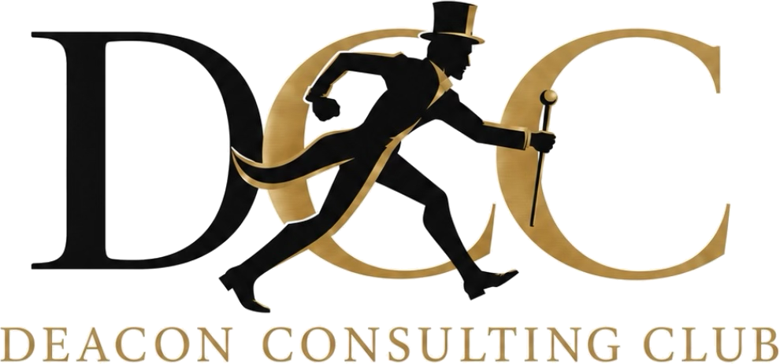

01
Semester-long team projects
Tackle a complex business challenge across the semester. Conduct research, analyze data, and present strategic recommendations the way a real engagement team would.
Wake Forest University · Winston-Salem, NC
The Deacon Consulting Club exposes Wake Forest students to the world of consulting, rigorous case preparation, real client work, and direct access to alumni at top firms. Open to every major and class year.

Winston-Salem 26/27 Pro Humanitate
We expose students to the world of consulting and develop their abilities in the industry, working on case interview technique in group practice settings, connecting members with alumni and professionals for networking and recruiting, and living out Wake Forest’s motto of Pro Humanitate through pro-bono consulting in the Winston-Salem community.
“Creating an accessible environment to problem-solve and explore the consulting industry.”
Wake Forest University Winston-Salem, NC
For clients
We bring the strategy, digital, and financial toolkit of top-tier consulting to Winston-Salem nonprofits and small businesses, organizations that wouldn’t otherwise have access to it, entirely pro bono.
For members
Members get in-depth education on the consulting industry and mindset, real-world consulting experience, rewarding social connections, and access to extensive professional networking opportunities.
Tackle a complex business challenge across the semester. Conduct research, analyze data, and present strategic recommendations the way a real engagement team would.
Gain real consulting experience by partnering with nonprofits, small businesses, and campus organizations, delivering strategic solutions in the spirit of Pro Humanitate.
Learn directly from consultants at MBB, Big 4, and boutique firms. Ask about a day in the life, company culture, and each firm’s unique recruiting process.
Polish your consulting resume with OPCD staff and experienced upperclassmen. Highlight your experiences, stand out to firms, and get personalized feedback.
Build confidence with up-to-date practice strategies. Participate in mock case interviews with fellow members in group practice settings.
Case libraryJoin a team and compete in case competitions on campus and beyond. Gain deep industry knowledge and introductions to professionals at top firms.
The DCC Analyst Program is the club’s selective tier of membership: hands-on client work, rigorous interview preparation, and direct access to practicing consultants. Analysts remain full members of the club.
General meetings run Tuesdays at 5:00 PM in Farrell Hall A27, building from networking and behavioral prep to live case practice, so a first-year with zero exposure can finish the semester interview-ready.
Sept 8
Meet the board and hear the plan for the year.
Sept 15
Why networking matters in consulting and how to run a coffee chat, with a Wake alum consulting at Accenture.
Sept 29
Strategic storytelling: connecting what you’ve done to what you’ll bring, with the Office of Leadership.
Oct 6
An introduction to case interviews: how a case runs from the prompt to the final recommendation.
Oct 20
Building custom, MECE frameworks instead of memorized templates.
Nov 3
Case math drills and pulling the “so what” out of charts and tables.
Nov 17
Wake alumni in consulting on recruiting, firm culture, and what they wish they’d known.
Dec 1
Our pro-bono teams present their recommendations to close out the semester.
A student board dedicated to building the next generation of Wake Forest consultants.
Whether you’re a current student or a Wake Forest alum working in consulting, there’s a place for you in DCC.
For students
We’re open to all Wake Forest students, regardless of major or class year. Drop in to any general meeting (Tuesdays at 5:00 PM in Farrell Hall A27), or reach out directly to get added to our GroupMe and stay in the loop on upcoming events.
Email us to joinFor alumni
We’re always looking for Wake Forest alumni in consulting to speak at events, lead case interview sessions, or mentor our members. Your experience makes a lasting difference.
Get in touch